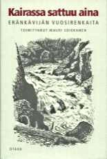

KIRJAT JA JULKAISUTOPPIMATERIAALIA NETISSÄ VUODESTA 1999 LÄHTIENPSYKOLOGIAN PIKALINKIT PSYKAN VIDEOABIKURSSIT: PSYKOLOGIAN MAAILMA -VIDEOKERTAUSKURSSI ABEILLE (vlogi) - UUSI OPS!! PS7 ABI KERTAUSKURSSI (opetustilanne) - VANHA OPS (OPS 2016-): PS1 Psyykkinen toiminta ja oppiminen PS2 Kehittyvä ihminen PS3 Tietoa käsittelevä ihminen PS4 Tunteet, psyykkinen hyvinvointi ja mielenterveys PS5 Yksilöllinen ja yhteisöllinen ihminen Rukoileva opetuslapsi Kohtaamisia - suomalainen usko Suomalainen usko Kohtaamisia - Opettajan opas Eränkävijä 1998 Kairassa sattuu aina Eränkävijä 2001 |
Kuninkaiden kohtaaminen(Kairassa sattuu aina, 2001)
Eränkävijän 50-vuotisjuhlakirja Kairassa sattuu aina - eränkävijän vuosirenkaita sisältää vuosien aikana
Eränkävijän kirjoituskilpailun voittaneita kirjoituksia, lähinnä metsästys- ja kalastusnovelleja. Kirjan on koonnut Mauri Soikkanen, Eränkävijän pitkäaikainen
toimittaja.Kirjoitukseni Kuninkaiden kohtaaminen, joka vuonna 1998 voitti kalastusaiheisen sarjan, päätyi antologiaan Mauri Soikkasen pyynnöstä. Kirjoitukseni on sivuilla 314-322. Kansi: Jukka Hillukkala ja Hannu Latvajärvi Otava, Keuruu 2001. s. 359 sid. ISBN 951-1-17552-1 |